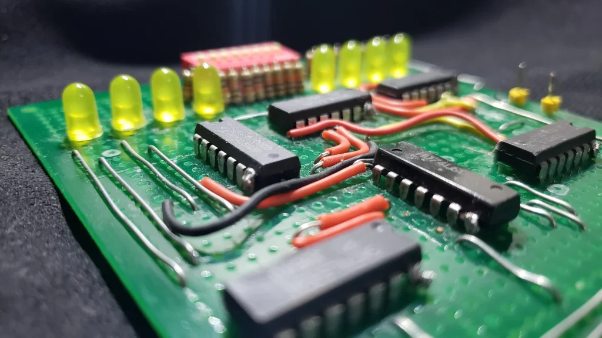

I am a passionate computer engineering student with a keen eye for design and a love for creating engaging user experiences. I tinker with building responsive and interactive websites that leave a lasting impression.
With a growing foundation in programming, web development, and computer engineering, I am constantly exploring new technologies and developing my skills through hands-on experience. Although I am still building my knowledge and understanding in these areas, I am eager to learn, improve, and take on new challenges.
When I am not coding, I spend time practicing hardware-related skills, particularly studying logic design, digital circuits, and their outputs. Outside of academics, I enjoy playing sports and exploring cryptocurrency and stock trading, which allows me to develop my analytical and decision-making skills. I am always eager to learn new things and continue growing both as a Computer Engineering student and as a future professional.
Read MoreI explore hardware and digital systems by working with logic circuits, digital components, and basic electronic concepts. I enjoy understanding how different components work together to produce specific outputs.
I develop my troubleshooting and problem-solving skills by identifying issues and finding practical solutions. I enjoy working with both hardware and software while learning how to improve and fix technical problems.
I apply my programming skills to create functional programs and solve different problems through code. I am continuously improving my knowledge by practicing and working on hands-on projects.
I use logical thinking and programming concepts to develop solutions for different tasks and projects. I am eager to explore different programming techniques and strengthen my skills through continuous practice.

Logic design is my forte because I genuinely enjoy solving its puzzles—breaking down complex problems, simplifying expressions, and designing clean, efficient circuits. Even so, I am still eager to learn more and take on new challenges so I can keep improving my skills.
Outside of academics, I spend time learning about cryptocurrency trading. It has shown me how much money can be made, but only in exchange for intense decision-making and strict risk management. One of the biggest lessons I have learned is that your worst enemy as a trader is often yourself—your emotions, impulses, and overconfidence.
An example of my mobile development work is Math Card Mania, an app that turns math practice into an interactive card-based game. This project would not have been possible without Vince Baraclan, whose help and collaboration were essential in developing and finalizing the app.
In AI development, I contributed to a project called AI Face Recognition. Together with Vince Baraclan and Raphael Callueng, we built a working system, gaining practical experience with computer vision models and the challenges of integrating AI into a real application.